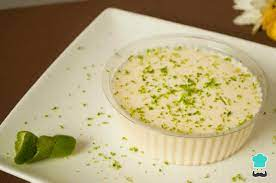

MOUSSE DE LIMÃO

INGREDIENTES
- 1 Lata de Creme de Leite sem soro
- 1 Lata de Leite Condensado
- 160 Mililitros de Suco de Limão
- Raspas de 2 Limões para decorar
MODO DE PREPARO
- No liquidificador, coloque 1 lata de creme de leite sem soro, 1 lata de leite condensado e 160 mililitros de suco de limão. Bata até ficar homogêneo.
- Transfira a misture para taças e decore com raspas de limão. É importante não ralar a parte branca para não amargar.
- Leve para gelar por, pelo menos, 1 hora antes de servir.